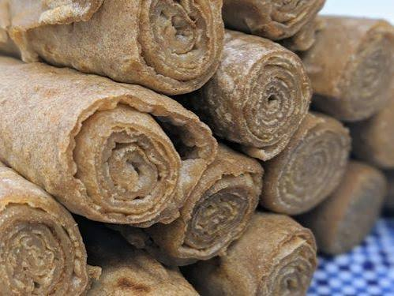

Injera

Injera is the national bread of Ethiopia, a soft, sour flatbread made from teff flour. It is used as both plate and spoon, and meals are traditionally shared from one large platter.
Ingredients
- 2 cups teff flour
- 3 cups water
- 1 tsp salt
Instructions
Step 1: Ferment the batter
Mix teff flour and water, cover, and leave at room temperature for 2 to 3 days until bubbly and sour.
Step 2: Add salt
Stir in the salt and thin the batter with a little water until it is pourable.
Step 3: Cook
Pour the batter in a spiral onto a hot non-stick pan, cover, and cook until holes form and the top is set. Do not flip.
Nutrition Facts (approximate, per serving)
| Nutrient | Amount |
|---|---|
| Calories | 200 kcal |
| Carbohydrates | 40 g |
| Protein | 7 g |